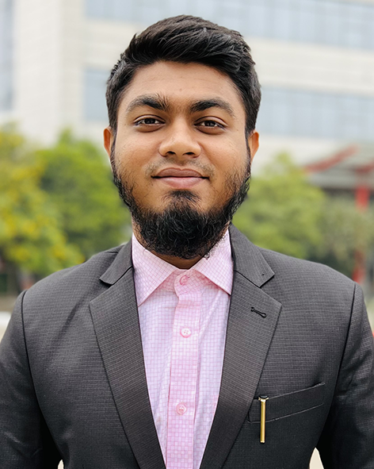
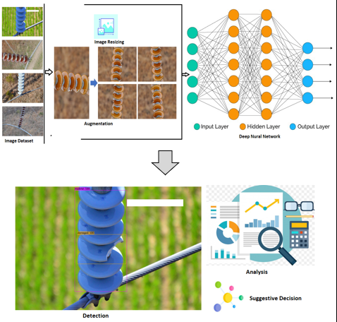

About Me
Hello, my name is MD. FAHIMUL HAQUE SADID and I am a fresh graduate in Electrical and Electronics Engineering. I am seeking job opportunities in the field of EEE. I am a self-motivated individual with a passion for learning new technologies and applying them to real-world problems. I am also a team player and can work well in a team environment.
Education
- Bachelor of Science in Electrical and Electronics Engineering from American International University Bangladesh (2018-2022)
- Higher Secondary School Certificate from Dhaka Imperial College (2016-2018)
- Secondary School Certificate from Motijheel Govt Boys' High School (2007-2018)
Skills
- Circuit Design and Analysis
- Simulation and Modeling (e.g. MULTISIM, MATLAB, PROTEUS, AutoCAD)
- Programming (C,C++)
- Microcontroller Programming (e.g. Arduino, STM, Raspberry pi)
Experience
- Internship at Dhaka Electric Supply Company Limited (September 2022-Octobor 2022)- Analysis of Power Distribution System Sales & Distribution operation and Substation operation of DESCO.
- Internship at Dhaka Power Distribution Company Limited (Octobor 2022-December 2022)- Analysis of Power Distribution System Sales & Distribution operation and Substation operation of DPDC.
Portfolio
-
Surface Damage Detection of Line Insulators Using Deep Learning Algorithms to Avoid Insulation Failure
During my internship I published my paper in ICARST 2023.
Contact
- Email: fhsadid444@gemail.com
- LinkedIn: linkedin.com/in/fahimul-haque-sadid
- GitHub: github.com